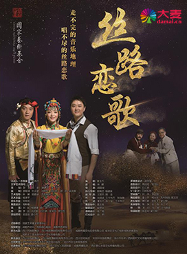
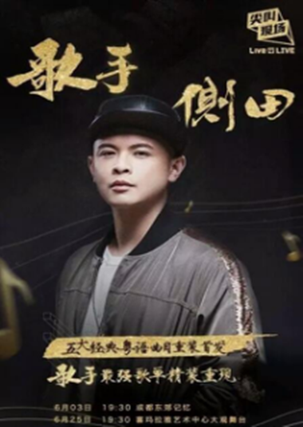
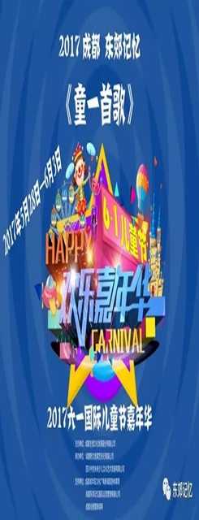
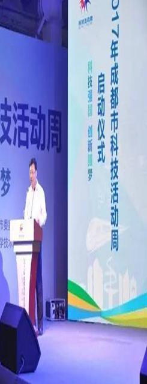
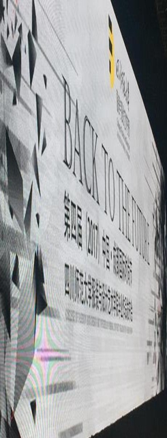

- 关于东郊记忆
-

关于关东记忆
位于成都市成华区建设南支路的 “成都东区音乐公园” 于2012年11月1日起更名为“东郊记忆”。成都东郊记忆旅游景区按城市工业用地更新和工业遗存保护相结合的方式，在成华区原红光电子管厂旧址上修建而成，是工业遗存保护和文化创意产业相结合的新型旅游景区。
- 音乐基地
-

音乐基地
中国数字音乐科技孵化园 中国原创音乐发展基金 中国数字音乐版权认证和交易中心 中国民族音乐体验展演平台
- 展演聚落
-
展演聚落
锦颂东方艺术展览中心-演艺中心-成都舞台三个核心场馆串联成东郊记忆展演聚落中轴线。围绕这条中轴线，园区划分为展演核心聚落、潮流文化场馆、幻变特色空间3类，共计18个特色场馆。这些大小、特点以及风格不一的绝佳场馆形成了成都乃至全国唯一配套齐全的展演聚落。全年超过1200场文化盛宴，让东郊记忆成为了当之无愧的“中国的伦敦西区”。
- 商业园区
-

商业园区
吃、住、行、游、购、娱，一应俱全。 作为成都最有特色的休闲文化旅游胜地，这里不仅可以体验由砖石和齿轮之间幻变出24个风格迥异的果然24房酒店，时尚炫酷的好多苹果主题餐饮，以及模仿80年代工厂餐厅的东郊食堂，将古今中国艺术与工业建筑完美结合的大妙火锅，还囊括了最华丽的玩乐空间，西南最大的IMAX影厅，最古老的唱片店，最文艺的书吧、咖啡馆、音乐酒吧、KTV，同时还可以在梧桐树下的花园餐厅畅享最成都的美食盛宴，在夜色降临后体验独特的冷淡杯。
- 潮玩东郊
-

潮玩东郊
一个充满工业文化遗产记忆的旅游园区 一个艺术资源聚集、多元文化互动体验的旅游园区 一个工业文明与音乐、创意文化结合的综合性旅游园区 来，东郊记忆寻找记忆中的创意工业园

-
东郊记忆·音乐公园2017街头艺人召集令
2017-06-09
街头艺人，你了解多少？在东东眼里，街头艺人都 有各自独当一面的技能，他们用手中的乐器演奏梦 想与执着，他们用自己的特长演绎生活的色彩，他们希望得到别
- 
-

Live 4 LIVE《尖叫现场》歌手侧田SUPE...
2017-05-26
侧田将于2017.6.3在东郊记忆演艺中心跟大家见面！他在2003年被音乐人雷颂德发掘，2005年包办 了首张专辑《Justin》中超半数的歌曲，同年年底便获得了...
-

《童一首歌》6.1国际儿童节欢乐嘉年华
2017-05-24
5月28日-6月3日，《童一首歌》6.1国际儿童节欢乐嘉年华即将落地成都东郊 记忆，届时儿童节欢乐嘉年华为大家带来六一儿童大派对，其中包括“童一首歌”大型少儿歌舞...
-

2017成都市科技活动周
2017-05-19
5月20日—21日，“2017年成都市科技活动周启动仪式及科普主题展示体验 活动”在成都“东郊记忆·锦颂东方”举行。本次活动由市科技局、市委宣传
-

第四届（2017）中国 成都国际时尚节本周亮
2017-05-18
5月19至20日，第四届（2017）中国•成都国际时尚节将于成都东郊记忆举行 。据悉，该活动在四川省经济与信息化委员会、四川省商务厅、...
-
Live 4 LIVE《尖叫现场》·Tez Cade..
2017-05-05
Tez Cadey（特兹·凯迪）将于2017.5.21在东郊记忆演艺中心跟大家见面！ 他是如今火爆全球的鬼步舞背景神曲《seve》的创作者，他成功地将世界上只
-
2017BOTY世界街舞大赛中国区暨成都国际
2017-04-27
5月1日音乐节将由以英国传奇唱盘人物DSK为首的顶尖说唱团队，以及 众多原创嘻哈音乐歌手和组合，带来一场音乐风暴。HIPHOP音乐一直以来都是
-
· 东郊记忆·音乐公园2017街头艺人召集令2017-06-09
街头艺人，你了解多少？在东东眼里，街头艺人都有各自 独当一面的技能，他们用手中的乐器演奏梦想与执着，他们用自己的特长演绎生活的色彩， 他们希望得到别人的赞赏，他们更...
-
· 原创体验式音乐剧 《丝路恋歌》2017-06-09
国家艺术基金扶持的音乐剧之一的成都本土大型原创音乐剧《丝路恋歌》将于6月7日 —21日在东郊记忆·演艺中心再度上演
-
· Live 4 LIVE《尖叫现场》歌手侧田SUPER LIVE成都站2017-05-26
侧田将于2017.6.3在东郊记忆演艺中心跟大家见面！他在2003年被音乐人雷颂德发掘 ，2005年包办了首张专辑《Justin》中超半数的歌曲，同年年底便获得了...
-
· 《童一首歌》6.1国际儿童节欢乐嘉年华2017-05-24
5月28日-6月3日，《童一首歌》6.1国际儿童节欢乐嘉年华即将落地成都东郊记忆，届时儿童节欢乐嘉年华为大 家带来六一儿童大派对，其中包括“童一首歌”大型少儿歌舞...
-
· 2017成都市科技活动周2017-05-19
5月20日—21日，“2017年成都市科技活动周启动仪式及科普主题展示体验活动”在成都“东郊 记忆·锦颂东方”举行。本次活动由市科技局、市委宣传部、市...
-
· 第四届（2017）中国 成都国际时尚节本周亮相2017-05-18
5月19至20日，第四届（2017）中国•成都国际时尚节将于成都东郊记 忆举行。据悉，该活动在四川省经济与信息化委员会、四川省商务厅、...
-
· Live 4 LIVE《尖叫现场》•Tez Cadey（特兹•凯迪）中国巡演成都站2017-05-05
Tez Cadey（特兹•凯迪）将于2017.5.21在东郊记忆演艺中心跟大家 见面！他是如今火爆全球的鬼步舞背景神曲《seve》的创作者，他成功地将世界上只有50...
-
· 2017BOTY世界街舞大赛中国区暨成都国际嘻哈文化音乐节2017-04-27
5月1日音乐节将由以英国传奇唱盘人物DSK为首的顶尖说唱团队，以及众多原创嘻哈音乐歌手 和组合，带来一场音乐风暴。HIPHOP音乐一直以来都是多元化元素和新锐艺术...
- 东郊记忆·音乐公园2017街头艺人召集令
- 发布时间：2017-06-09 16:26
如果你想坚持你的梦想，
现在，有一个超级好的机会↓↓↓
东郊记忆愿意做你的伯乐，
为你创造更好的舞台！
东郊记忆·音乐公园2017街头艺人召集令正式启动！
街头艺人召集令，能带来什么呢？
1.比赛选出的10位选手会获得现金奖励；
2.加入东郊记忆艺人库；
3.有机会在东郊记忆主办的各种音乐活动上有偿演出。
如果你能有机会加入东郊记忆的艺人库，
你的音乐可以被更多志同道合的朋友听见，
你会登上更闪耀更专业的舞台，
如果你想得到一个机会，离你的梦想更近一步，
那你还等什么？！
今日起即可报名！报名后，主办方将会电话通知你！
报名通道：http://i.eqxiu.com/s/ZNJrwk9X
报名参赛的个人或团体于6月21日在东郊记忆斯坦威音乐厅进行比赛，
比赛采用晋级和淘汰制，参赛选手若取得评审组的晋级牌方可晋级。最
终选出10位参赛选手签约东郊记忆艺人库。
如果你期待你的梦想能够被实现，
如果你想拥有更好的舞台去展示你的才华，
你，或者你的团队，
现在机会就在你的面前，
Just do it！！
- 原创体验式音乐剧 《丝路恋歌》
- 发布时间：2017-06-09 16:20
音乐剧《丝路恋歌》是集音乐、演唱、戏剧、歌舞、表演、互动于一体，是一种跨界、综合、全新的舞台表演艺术形式。 以真实题材为背景的爱情故事完整地贯穿整个剧情，大量原创的音乐与歌曲，让人沉浸在美妙、动人的乐音之中；舞台戏剧化表演串联全剧 ，动与静结合，抒情与叙事相得益彰；大型汉、藏、羌、彝著名经典舞蹈的唯美与震撼呈现，是一场难得的欣赏经典民族歌舞的盛宴。
四川的汉藏羌彝一大批非物质文化遗产，也将集中并灿烂呈现；其中，由 中国著名的舞美设计大师刘科栋先生设计制作的舞美、道具、场景让人耳目一新，亮眼夺目；演出现场与观众新 颖和连续性的互动氛围，也将成就观众一场前所未有的奇异体验。
值得一提的是，音乐剧《丝路恋歌》是著名音乐人、导演兰卡布尺继大型民族歌舞剧《天地吉祥》、 《蜀歌·蜀嫁》之后，为成都推出的又一音乐艺术杰作。
- Live 4 LIVE《尖叫现场》歌手侧田SUPER LIVE成都站
- 发布时间：2017-05-26 13:33
侧田将于2017.6.3在东郊记忆演艺中心跟大家见面！
他在2003年被音乐人雷颂德发掘，2005年包办了首张专辑《Justin》中超半数的歌曲，同年年底便获得了香港四大传媒音乐颁奖 礼中所有新人男歌手的奖项。2007年2月，在香港体育馆红馆举行《港乐‧侧田演唱会》，同年凭借一首《男人KTV》将自 己的歌唱事业推到了巅峰，包揽了所有的十大歌曲奖。他的情歌《命硬》、《好人》、《三十日》、《Kong》均是深入人心 的经典之作。他就是侧田，天生具有音乐才华的唱作人，被誉为“歌神”张学友的接班人。
对音乐的执着陪伴了他在音乐路上披荆斩棘。去年参加《蒙面唱将猜猜猜》时，那首饱含深情的《好久 不见》苏醒了观众的记忆；今年年初加入《我是歌手 第五季》，重新演绎成名曲《命硬》强势回归。只是当年那个反 戴鸭舌帽的情歌小王子，如今已经快40岁了，时间朦胧了他的光芒也沉淀了他的青春。现在的他，声音依旧迷人，只是声音中多 了些属于他自己的故事，同时也愈加能感受到他对音乐的热爱、对舞台的痴迷。
2017年，蜕变重生后的侧田联手由多米音乐&咪咕音乐联合主办、爱奇艺联合出品的新锐演出 厂牌Live 4 LIVE《尖叫现场》，举办他的首个巡回音乐会。如果你曾在某个深夜被《三十日》感动的潸 然泪下，如果你能一口气唱完《男人KTV》，如果你也拥有《命硬》般不服输的心境......那么，请和你爱的 人一起来听侧田的LIVE吧，6月3日成都东郊记忆演艺中心 在他的侧式情歌中体验不一样的“尖叫现场”！
- 《童一首歌》6.1国际儿童节欢乐嘉年华
- 发布时间：2017-05-26 13:33
5月28日-6月3日，《童一首歌》6.1国际儿童节欢乐嘉年华即将落地成都东郊记忆，届时儿童节 欢乐嘉年华为大家带来六一儿童大派对，其中包括“童一首歌”大型少儿歌舞晚会、“童心在飞翔”优秀节目展演、“快乐童 年”充气动画城堡、“儿童COSPLAY”、“儿童淘宝街”、“宝宝美食节”吃遍记忆中的美味、“天天开跑”成都跑娃。
爸爸妈妈们还在为儿童节的去处发愁？别犹豫了，带上你的小天使，全家一起走进东郊记忆，参加儿童节欢乐嘉年华 ，一起享受童年的快乐之旅！
- 2017成都市科技活动周
- 发布时间：2017-05-19 11:35
5月20日—21日，“2017年成都市科技活动周启动仪式及科普主题展示体验活动”在成都“东郊记忆·锦颂东方”举行。 本次活动由市科技局、市委宣传部、市文明办、市教育局、市科协共同主办，活动的主题是“科技强国·创新圆梦”。
5月20日上午举行了启动仪式，仪式由市科技局局长卢铁城主持，市委常委、市总工会主席吴凯致辞，省科技厅副厅长景世刚向成都 市科普志愿者总队授旗，市文明办副主任梁红、市科协纪检组长王振飞、成华区副区长邓旭、市科技局副巡视员王珏明、市教育局 局长助理骆登宇、省科技厅科普处处长陈燕出席活动。启动仪式上，向“2017年成都市青少年科幻画大赛”一等奖获奖选手及优秀组织 单位代表举行了颁奖，为市民及学生代表发放了“2017年成都市创新蓉城科普一日游”护照，科普志愿者代表进行了宣誓。成都市科技 工作者代表、中小学生代表、市民代表、以及媒体代表等近300余人参加启动仪式。
- 第四届（2017）中国 成都国际时尚节本周亮相
- 发布时间：2017-05-18 11:34
5月19至20日，第四届（2017）中国•成都国际时尚节将于成都东郊记忆举行。据悉，该活动在四川省经济与信息化 委员会、四川省商务厅、四川省技术质量监督局、成都市经济与信息化委员会、成都市商务局、成都市技术质量监督局的指导下，由四川师范 大学服装与设计艺术学院、成都服装（服饰）行业协会联合承办。
继前三届时尚节的成功举办，本届时尚节以国际视野推陈出新，聚合政府、企业、高校、时尚达人，让时尚元素融合碰撞，实现时尚文化的多元交流。
活动期间，时尚院校呈现优秀毕业作品发布会、时尚品展览、话剧演出等；举办时尚产业与设计教育高峰论坛、珠宝领袖高峰论坛、“丝绸之路”国际 高峰论坛，邀请国内外知名专家及行业高管，共议时尚话题。
成都作为西南地区的经济、文化、金融中心，拥有颇为丰富的时尚资源。举办中国成都国际时尚节，集合各方优势，从学术、文化 、技术、品牌等角度为成都的时尚产业发展贡献力量，推进传统消费品如服装、鞋包、珠宝、家具等行业，向时尚产业转型升级。
- Live 4 LIVE《尖叫现场》·Tez Cadey（特兹·凯迪）中国巡演成都站
- 发布时间：2017-05-05 09:35
Tez Cadey（特兹·凯迪）将于2017.5.21在东郊记忆演艺中心跟大家见面！
他是如今火爆全球的鬼步舞背景神曲《seve》的创作者，
他成功地将世界上只有5000多万人使用的斯瓦西里语编入歌词并推向全世界，
他所创作的歌曲旋律优美并引人瞩目，尤其深受年轻人喜爱。
他就是电音大神Tez Cadey（特兹·凯迪），一位年仅23岁的美国出生法国长大的音乐制作人，2011年出道活跃至今。
他创作的魔性神曲《seve》搭配起源于蒙古的鬼步舞视频，上传youtube后便“病毒”式传播，传至国内风靡各大视频网站。据悉 ，Youtube相关视频播放量破200亿，全球超过300位艺人共舞“鬼步”神曲。 日前少年团体TFBOYS和演员李小璐、薛之谦共同跳 「Shuffle舞（鬼步、滑步、曳步舞）」，整齐划一的动作，配上动感音乐，不少网友都表示「这舞蹈太有魔性了」、「想学」 ；洗脑旋律、魔性舞蹈不但让网友「不知不觉就重播10遍」，更在微博掀起一股全民seve风潮。不少人都上传自己仿跳或是教学 影片，锻炼身体跳鬼步，酷炫特效挡不住，兵哥哥版，美少女版，交警版，小正太版，时尚达人版、广场舞版各种版本疯狂来袭， 连续占据微博热搜关键字。
我们5.21东郊记忆演艺中心不见不散！
- 2017BOTY世界街舞大赛中国区暨成都国际嘻哈文化音乐节
- 发布时间：2017-04-27 15:07
5月1日音乐节将由以英国传奇唱盘人物DSK为首的顶尖说唱团队，以及众多原创嘻哈音乐歌手和组合， 带来一场音乐风暴。HIPHOP音乐一直以来都是多元化元素和新锐艺术形式相结合的音乐。用一种特殊的音乐表达出当代年轻 人从不循规蹈矩的态度，用他们的个性张扬和激情四射，为嘻哈迷们打造一场夏日摇滚音乐视听盛典，在音乐节的狂欢氛围中 酣畅淋漓地享受顶级嘻哈原创带来的狂欢体验。
5月2-3日 2017 BOTYCHINA
BOTY，即Battle of the Year，它是由Thomas Hergenrother于1990年创办的一年一度的全球性breaking街舞系列赛。 从建立的时间来看，BOTY是世界上成立最早、历史最悠久的街舞赛事。目前，其已经在全球各地成功举办二十多届。它的发 展伴随Hip-Hop文化的传播日益加深，在全球爱好者心中BOTY已经是“breaking界的世界杯”。
由于BOTY赛事在全球范围内举办，并且举办次数多，被不少街舞爱好视作承载Hip-Hop发展的“全球秀”。在它的推动下， Hip-Hop的逐渐突破地下文化的羁绊，成为当下全球主流文化的一种。尤其是近几年来，BOTY总决赛每次都会吸引到来自全 球各地的数万观众到现场观看比赛。场面热烈程度，不亚于世界杯足球赛。其比赛视频更是迅速在全球各大社交平台、视频 网站上流传成为最热门的视频之一。
要知道，这场世界上最高水平、最具权威性和影响力的国际街舞大赛，已经成为全球热爱Hip-Hop的舞者心目中的“圣地”。 每年都有无数breaking舞者高手参与BOTY“朝圣”，希望能够一路过关闯将，最终站在全球街舞之巅，实现自己的终极梦想! 而今年，成都这个及吃喝玩乐等各种潮流风向标为一体的城市，不仅是作为2017 BOTY 中国赛区的举办地，还独家融合了嘻 哈音乐节，给来自全国各地的精英舞者和观众以全新的体验，尽情感受街舞文化、嘻哈音乐、涂鸦艺术、极限运动、潮流集 市，绝对不容错过!